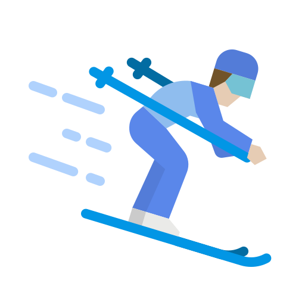

WHO AM I
KDO JSEM
I’m Martin Kafka, a 25-year-old university student from the Czech Republic with a strong passion for data analysis.
My expertise lies in data wrangling, statistical modeling, and business analytics, which I use to drive insights
and enhance decision-making. With a solid foundation in computing for data science and a keen interest in machine learning,
I strive to transform raw data into meaningful stories.
üîπ Experienced in ETL processes, SQL, and Python
üîπ Interested in predictive analytics & geospatial data
üîπ Enthusiastic about data-driven solutions for real-world problems
MY STORY
MŮJ PŘÍBĚH
My academic journey began in nuclear physics, where I struggled with the abstract nature of numbers—I couldn’t touch them, visualize them, or fully grasp their meaning.
This led me to transition into data analysis and statistics, where I found my passion in uncovering patterns, making predictions, and drawing meaningful insights from raw data.
For my Master’s studies, I moved to Bolzano, Italy, where I delved deeper into problem-solving, advanced machine learning and deep learning techniques, and honed my skills in data visualization.
This international experience not only expanded my technical expertise but also reinforced my ability to approach complex challenges with a structured and analytical mindset.

SKILLS
DOVEDNOSTI
Data Analysis
Analýza dat
I specialize in extracting valuable insights from data through statistical modeling, machine learning, and business analytics. I primarily work with R and Python for both analytical and visualization purposes, ensuring data-driven decision-making.
Leadership
Vedení týmu
Through my experience as a sports team coach, a member of a grant project, and a musician in a band, I have developed strong leadership and communication skills. I excel at problem-solving, team collaboration, and decision-making, ensuring efficiency and a structured approach in dynamic environments.
USING NOW:
AKTUÁLNĚ POUŽÍVÁM:

Python

R

PowerBI

Microsoft Office

SQL
Git
LANGUAGES:
JAZYKY:

CZECH - native speaker
ČEŠTINA - rodilý mluvčí

ENGLISH - Full professional proficiency
ANGLIČTINA - profesionální znalost

GERMAN - B1
NĚMČINA - B1
EDUCATION
VZDĚLÁNÍ

2019 - 2022 | BSc in Data Analysis and Modelling
Prague University of Economics and Business
Final Grade: Red diploma (Average below 1.5)
PROJECTS & PUBLICATIONS
PROJEKTY & PUBLIKACE
2020 - 2021 | IGA - Financing of Higher Education
Impact of financing on quality of education in higher education.
2022 | Bachelor Thesis
Analyzing the relationship between teachers' publication activity and their evaluations.

2022 | Publication - He who researches well, teaches well: myth or not?
An article exploring the connection between research activity and teaching quality.

2025 | Capstone Project
Analyzing geospatial influence on product ordering at Würth Italia.
WORK EXPERIENCE
PRACOVNÍ ZKUŠENOSTI

2022 | Internship
Designed and implemented dashboards to visualize and analyze sales data trends.
HOBBIES
KONÍČKY

Floorball
Florbal
Coppa Italia champion, youth team runner-up in Czech Republic, currently playing for SSV Bozen.

Coach
Trenér
Licensed trainer with experience in Czech and Italian academy teams.

Skiing Instructor
Instruktor lyžování
Certified instructor with experience in primary school skiing courses.

Healthy Lifestyle
Zdravý životní styl
As a Type 1 diabetic, staying active helps me manage my condition.

Other Sports
Další sporty
Actively playing volleyball, tennis, and doing fitness.

Music
Hudba
Playing piano since childhood, performed solo & in a Rammstein revival band.